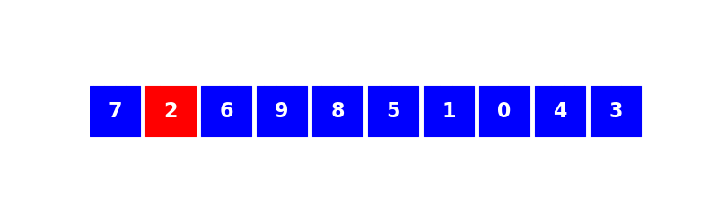

7.6. Tris¶
On décrit les algorithmes au programmme permettant de trier un tableau de valeurs numériques.
7.6.1. Tri par insertion¶
Le principe est très simple : c’est l’algorithme qu’utilise naturellement l’être humain pour trier des objets comme par exemple des cartes à jouer.
On procède en plusieurs étapes. On suppose qu’à l’étape \(i\), les éléments d’indice \(0\) à \(i-1\) du tableau sont déjà triés et on insère alors l’élément d’indice \(i\) à sa place parmi les éléments précédents.
Un dessin vaut probablement mieux qu’un long discours.
On peut alors proposer la fonction Python suivante.
In [1]: def tri_insertion(tab):
...: for i in range(1,len(tab)):
...: val = tab[i]
...: pos = i
...: while pos > 0 and tab[pos - 1] > val:
...: tab[pos] = tab[pos-1]
...: pos -= 1
...: tab[pos] = val
...:
On vérifie qu’elle fonctionne bien sur quelques tableaux choisis aléatoirement.
In [2]: from numpy.random import randint
In [3]: tab = randint(100, size=20)
In [4]: tab
Out[4]:
array([40, 7, 94, 79, 49, 68, 15, 33, 58, 95, 85, 35, 24, 21, 90, 2, 26,
5, 7, 11])
In [5]: tri_insertion(tab)
In [6]: tab
Out[6]:
array([ 2, 5, 7, 7, 11, 15, 21, 24, 26, 33, 35, 40, 49, 58, 68, 79, 85,
90, 94, 95])
À faire
preuve de l’algorithme + complexité
7.6.2. Tri rapide¶
Le tri rapide est une application du principe diviser pour régner. Il consiste
à choisir un élément du tableau à trier comme pivot ;
à séparer le tableau à trier en deux sous-tableaux contenant respectivement les éléments inférieurs et supérieurs au pivot ;
et à répéter le processus sur les deux sous-tableaux.
Comme tout algorithme du type diviser pour régner, le tri rapide se prête bien à une implémentation récursive 1.
In [7]: from numpy.random import choice
In [8]: def tri_rapide(tab):
...: if len(tab) == 0:
...: return []
...: pivot = choice(tab) # Choix aléatoire d'un élément comme pivot
...: t1, t2 = [], []
...: for x in tab[1:]:
...: if x < pivot:
...: t1.append(x)
...: else:
...: t2.append(x)
...: return tri_rapide(t1) + [pivot] + tri_rapide(t2)
...:
In [9]: from numpy.random import randint In [10]: tab = randint(100, size=10) In [11]: tab Out[11]: array([97, 12, 37, 26, 82, 69, 73, 10, 20, 52]) In [12]: tri_rapide(tab) Out[12]: [10, 10, 20, 20, 37, 52, 52, 69, 73, 97]
L’algorithme précédent crée une nouvelle liste à chaque appel de la fonction tri_rapide. D’un point de vue de l’utilisation de la mémoire, on peut préférer effectuer un tri en place : on modifie le tableau au cours de l’algorithme de tri.
In [13]: def partition(tab, g, d, p):
....: j = g
....: tab[p], tab[d] = tab[d], tab[p]
....: for i in range(g, d):
....: if tab[i] <= tab[d]:
....: tab[i], tab[j] = tab[j], tab[i]
....: j += 1
....: tab[d], tab[j] = tab[j], tab[d]
....: return j
....:
In [14]: def tri_rapide(tab, g=0, d=None):
....: if d == None:
....: d = len(tab) - 1
....: if g < d:
....: p = randint(g, d + 1)
....: pp = partition(tab, g, d, p)
....: tri_rapide(tab, g, pp - 1)
....: tri_rapide(tab, pp + 1, d)
....:
In [15]: tab = randint(100, size=10)
In [16]: tab
Out[16]: array([43, 30, 58, 66, 8, 3, 93, 42, 98, 51])
In [17]: tri_rapide(tab)
In [18]: tab
Out[18]: array([ 3, 8, 30, 42, 43, 51, 58, 66, 93, 98])
7.6.3. Tri par fusion¶
Le tri par fusion est également une application du principe diviser pour régner. Il consiste
à séparer la liste à trier en deux-sous listes si elle contient plus d’un élément ;
appliquer l’algorithme de tri aux deux sous-listes ;
fusionner les deux sous-listes triées en une liste triée.
L’algorithme de tri par fusion est de nature récursive par définition.
In [19]: def tri_fusion(tab):
....: if len(tab) < 2:
....: return tab
....: else:
....: m = len(tab)//2
....: return fusion(tri_fusion(tab[:m]), tri_fusion(tab[m:]))
....:
Le principe de fusion de deux listes triées en une liste triée est très simple :
on compare les deux premiers éléments de chacune des listes ;
on déplace le plus petit d’entre eux de la liste auquel il appartient vers la fin de la liste à renvoyer ;
on répète le processus jusqu’à ce qu’une des deux listes soient vides ;
on ajoute l’intégralité de l’autre liste à la fin de la liste à renvoyer.
In [20]: def fusion(t1, t2):
....: t = []
....: while t1 and t2:
....: if t1[0] < t2[0]:
....: t.append(t1.pop(0))
....: else:
....: t.append(t2.pop(0))
....: if t1:
....: t.extend(t1)
....: else:
....: t.extend(t2)
....: return t
....:
In [21]: from numpy.random import randint In [22]: tab = list(randint(100, size=20)) In [23]: tab Out[23]: [68, 84, 95, 60, 28, 0, 72, 22, 32, 46, 32, 72, 4, 81, 30, 22, 97, 90, 77, 54] In [24]: tri_fusion(tab) Out[24]: [0, 4, 22, 22, 28, 30, 32, 32, 46, 54, 60, 68, 72, 72, 77, 81, 84, 90, 95, 97]
On peut également donner une implémentation récursive de l’lagorithme de fusion.
In [25]: def fusion(t1, t2):
....: if not t1:
....: return t2
....: if not t2:
....: return t1
....: if t1[0] < t2[0]:
....: return [t1[0]] + fusion(t1[1:], t2)
....: else:
....: return [t2[0]] + fusion(t1, t2[1:])
....:
In [26]: from numpy.random import randint In [27]: tab = list(randint(100, size=10)) In [28]: tab Out[28]: [85, 29, 41, 38, 82, 91, 91, 43, 72, 81] In [29]: tri_fusion(tab) Out[29]: [29, 38, 41, 43, 72, 81, 82, 85, 91, 91]
- 1
On peut également proposer une implémentation tirant partie des spécificités de Python (listes en compréhension).
In [30]: from numpy.random import choice In [31]: def tri_rapide(tab): ....: if len(tab) == 0: ....: return [] ....: pivot = choice(tab) ....: return tri_rapide([x for x in tab if x < pivot]) +\ ....: [x for x in tab if x == pivot] +\ ....: tri_rapide([x for x in tab if x > pivot]) ....:
In [32]: from numpy.random import randint In [33]: tab = randint(100, size=10) In [34]: tab Out[34]: array([86, 61, 57, 9, 47, 70, 5, 38, 54, 80]) In [35]: tri_rapide(tab) Out[35]: [5, 9, 38, 47, 54, 57, 61, 70, 80, 86]